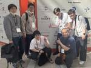

LIVESENSE ENGINEER BLOG
https://made.livesense.co.jp/
リブセンスエンジニアの活動や注目していることを発信しています
フィード

リブセンスエンジニアによる RubyKaigi 2025 振り返り座談会 1
1
LIVESENSE ENGINEER BLOG
転職ドラフトでエンジニアをしている verdy_266 です。 リブセンスではほとんどのプロダクトが Ruby を使って実装されており、4/16-18 に開催された RubyKaigi 2025 に弊社のエンジニアメンバーで参加してきました。 毎年恒例の、リブセンスエンジニアでの集合写真（緑ストラップの人にも掲載許可をとっています） この記事では、RubyKaigi に参加したエンジニアでセッションの振り返りを行った模様をお伝えします。 3年前から同様の記事を出し続けています。今までの記事はこちらです。 made.livesense.co.jp made.livesense.co.jp mad…
12日前

サムネイルを生成する画像変換サーバーの改善(Go,Rust)
LIVESENSE ENGINEER BLOG
リアルタイムにサムネイルを生成する画像変換サーバーを運用している中で発生した課題と改善に関するお話です。
24日前
EMConf JP 2025に行ってきました！
LIVESENSE ENGINEER BLOG
株式会社リブセンス アルバイト事業部 開発Gの村山です。 2025年2月27日にベルサール新宿グランドコンファレンスセンターでEMConf JP 2025が開催されました。 弊社から4名が一般参加してきたのでその様子をお届けします。 EM Confとは？ 印象に残ったセッション @sheep_san_white の印象に残ったセッション Two Blades, One Journey: Engineering While Managing 毛利の印象に残ったセッション サバイバルモード下でのエンジニアリングマネジメント 落合の印象に残ったセッション エンジニアリング価値を黒字化する、バリューベ…
2ヶ月前
【いまさらやるPostfix】GmailにPostfix+Rspamd(SPF/DKIM)を使ってメールを送る
LIVESENSE ENGINEER BLOG
はじめに Gmailの送信制限 Postfixの構築 前提条件 インストール 基本設定 Rspamdの構築 インストール 初期設定 DNSの設定 SPF DKIM DMARC PostfixとRspamdの連携 メール送信テスト コード例 実行 テスト結果 おわりに おまけ はじめに 技術部インフラグループの鈴木です。最近Postfixをいじっているのですが、Gmailにメールを送信するのに苦労しました。今回はその経験をもとに、PostfixからGmailにメールを送信するための設定をまとめました。 メール送信ではSMTPというプロトコルが使われますが、そのシンプルさ故にパッチが次々と当てられ…
2ヶ月前
BuriKaigi 2025で転職ドラフトのスポンサーセッションしてきました
LIVESENSE ENGINEER BLOG
はじめに まず前夜祭 当日 セッション 生成AI時代のソースコード管理を考える：‘X as Code’からGitOpsへのDevOps進化論 2024年のWebフロントエンドのふりかえりと2025年 スポンサーセッション さいごに はじめに 転職ドラフトでWebアプリケーションエンジニアをやっている iwtnです。 今回は、BuriKaigiという富山で開催される北陸のITエンジニアカンファレンスに参加したことをレポートします。 burikaigi.dev connpass を見ると、10年以上の伝統があるカンファレンスであることがわかります。継続できるって大切ですよね。 toyama-eng…
3ヶ月前
SRE Kaigi 2025 注目セッションまとめ
LIVESENSE ENGINEER BLOG
SRE Kaigi 2025 にリブセンス インフラGメンバーが参加しました！ 各自が印象に残ったセッションをレポートし。SREの裾野を広げるための研修設計、DBRE、セキュリティログ分析、SREキャリア論、スクラム改善など、多岐にわたるテーマで学びを得た様子をお届けします。SREの最前線を体感し、今後の業務に活かすためのヒントが満載です！
3ヶ月前
フリーランスエンジニアから正社員転換したエンジニア2人の本音に迫る
LIVESENSE ENGINEER BLOG
こんにちは。人事部エンジニア採用担当の平田です。 エンジニア採用を進める中で、業務委託だった方が正社員として入社してくれるという嬉しいサプライズが続出したので、ご本人たちにインタビューを実施してみました。 話す中で見えてきた、リブセンスらしいエンジニア文化や制度について書きます。 はじめに まずはインタビュイーのおふたりの経歴を簡単に紹介したいと思います。 草間さん 大学卒業後、塾講師としてキャリアをスタート。受託開発会社でのiOSアプリエンジニア経験を経て、業務委託としてマッハバイトへジョイン。アプリエンジニアとしてのバックグラウンドを活かしつつSEOなどにも着手していき、2024年8月に正…
3ヶ月前
Performance Insightsを最大限活用するために共用DBユーザをやめた話
LIVESENSE ENGINEER BLOG
こんにちは、かたいなかです。 マッハバイトのDBはAWS移行によってAmazon Auroraに移行しました。Auroraで使えるPerformance Insightsは、パフォーマンス関連の問題を調査するのに大きく役立っています。 aws.amazon.com 最近、Performance Insightsをより効率的に活用するため、共用DBユーザをやめて、クエリ等の発行元を調べやすくする対応を実施しました。 比較的地味な対応ではありますが、こういった改善も真面目にやってますよという意味で記事に残します。 経緯 マッハバイトでは2024年2月にすべてのインフラのクラウド移行を完了しました。…
3ヶ月前
アドベントカレンダーのまとめとエンジニア採用広報チームの一年の振り返り
LIVESENSE ENGINEER BLOG
これは Livesense Advent Calendar 2024 DAY 25 の記事です。 こんにちは、かたいなかです。 この記事ではリブセンス Advent Calendar 2024やリブセンスのエンジニア採用広報チームの一年の活動を振り返ります。 リブセンス Advent Calendar 2024、無事完走しました！ adventar.org 今年のアドベントカレンダーも無事完走することができました🎉 今年のアドベントカレンダーでの新たな取り組みとして、12月後半の平日5日間を、「初めて記事を書く人専用枠」として指定しました。 これによって、初めて書く方が執筆にチャレンジしやすい…
5ヶ月前
黒歴史最終処分場。でHDDを破壊した話
LIVESENSE ENGINEER BLOG
これは Livesense Advent Calendar 2024 DAY 24 の記事です。 リブセンス インフラエンジニアのsheep_san_whiteです。お酒とロードバイクとランニングが好きなおじさんです。 先日、黒歴史最終処分場。でHDDを破壊したので、その時のことを書きます。 はじめに オフィスの移転に伴う開発環境の廃止・AWS移行 本番環境の配置されたデータセンターの解約と物理サーバ撤去 秋葉原最終処分場。さんへ 打ち上げ おわりに はじめに リブセンスでは、データセンターで本番環境として運用している物理サーバが不要になった際は、オフィスのマシン室へ持ち帰って開発環境として再…
5ヶ月前
アプリ品質向上のため、iOSアプリにFeature Togglesを導入しました
LIVESENSE ENGINEER BLOG
これは Livesense Advent Calendar 2024 DAY 23 の記事です。 アルバイト事業部開発グループの三野田です。 現在、マッハバイトのアプリチームでは、普段の施策開発と並行して、アプリ品質の向上に取り組んでおり、UIテストの導入や設計の見直しなどを行なっています。 made.livesense.co.jp 今回は、アプリ品質向上の取り組みの一環としてFeature Togglesの導入を行なったため、紹介します。 今回扱わないこと アプリチームが抱えている課題 Feature Toggles Feature Togglesの種類 Release Toggles Ex…
5ヶ月前
MySQL をアップグレードした後日、時間差で発生した Rails アプリの不具合とは？
LIVESENSE ENGINEER BLOG
これは Livesense Advent Calendar 2024 DAY 21 の記事です。 転職会議の池田です。MySQL を 8.0.19 以上のバージョンにアップグレードした際に時間差で発生した Rails アプリケーションの不具合とその対応について書きます。 TL;DR なにがおきたか MySQL 8.0.19 と ActiveRecord の Boolean キャスト 実際に問題となるタイミング どのように対応したか 再発防止のために おわりに TL;DR MySQL 8.0.19 から 整数型の表示幅が表示されなくなることで、 ActiveRecord が tinyint(1)…
5ヶ月前
創業時から運用が続いていたレガシーコードからの脱却
LIVESENSE ENGINEER BLOG
これは Livesense Advent Calendar 2024 DAY 20 の記事です。 はじめまして、アルバイト事業部の星 id:watasihasitujidesu です。 idがwatasihasitujidesuですが、執事ではありません。エンジニアです。 今回はタイトルの通り、創業時から運用が続いていたレガシーコードから脱却に取り組んだプロジェクトについて、その背景や課題、そして具体的な対策を紹介します。 背景 状況と課題 システムの状況 エンジニアのチームメンバーの状況 当時の私の状況 レガシーコードから脱却のコツ 対象システムの解像度を上げ切る プロジェクト進捗を可視化し…
5ヶ月前
Developers CAREER Boost 2024でLTしました
LIVESENSE ENGINEER BLOG
はじめに カンファレンス概要 セッションの感想 LT内容 登壇内容の補足 瞑想 坐禅 写経 ヨガ まとめ はじめに 技術部インフラグループの鈴木です。最近高級オーダーメイド枕を作ったのですが、肩こりが軽減された気がします。おすすめです。 ところで、先日カンファレンスでライトニングトークを行う機会をいただきました。 Web業界に転職して1年余り、外部からの依頼で登壇することが自分の目標の1つだったので、それを達成できて嬉しく思っています。この経験について共有させていただきます。 カンファレンス概要 Developers Summitのキャリア版です。 event.shoeisha.jp 技術が日…
5ヶ月前
DatadogとGitHub Actionsを使ってバグが混入したデプロイを一瞬で見破れるようにする方法
LIVESENSE ENGINEER BLOG
これは Livesense Advent Calendar 2024 DAY 19 の記事です。 はじめに 本記事で行わないこと 実装しようと思った背景 実装手順 タスク定義にバージョンタグを追加 GitHub Actionsからコミットハッシュをtask定義ファイルに渡す 実装結果 最後に 参考にした記事 はじめに 株式会社リブセンスに内定者インターンとして参加している小野です。 本記事では、Datadogを活用してアプリケーションのバージョントラッキングを実装する方法について解説します。 アプリケーション開発の過程でバージョン管理を行うことには、以下のようなメリットが存在します。 バージョ…
5ヶ月前
続 チームのリリース数を可視化してみた
LIVESENSE ENGINEER BLOG
株式会社リブセンス アルバイト事業部エンジニアの村山です。これを書いている時、mixi2を触ってはぇ〜ってなってます。 普段はマッハバイトというアルバイト求人サイトの開発に携わっており、開発グループというエンジニア全員が所属するグループのグループリーダー（EM）をやっています。 以下の記事でチームのリリース数を可視化する、という取り組みを紹介させてもらいました。 made.livesense.co.jp この記事では上記仕組みの課題やその解決方法について書いていきます。 最後まで読んでもらえたら嬉しいです。 課題 以前構築した仕組みで抱えてていた課題は、シンプルにデータの保持期間があるというも…
5ヶ月前
非エンジニアがスポンサーとして技術コミュニティに関わるうえで大切なこと
LIVESENSE ENGINEER BLOG
これはLivesense Advent Calendar 2024 Day 14の記事です。 はじめに こんにちは。おーなかです。 クラフトビールとあたしンちが、成人してからずっとだいすきです。 転職ドラフトにて、技術コミュニティ*1主催のカンファレンススポンサー主担当などをやっています。 job-draft.jp いくつかカンファレンススポンサーとして技術コミュニティに関わらせていただき、主に企画や体験設計において、自分のなかで大切にしたい考え方が見えてきたのでお伝えします。 非エンジニアの採用・サービス広報で今後カンファレンススポンサーを検討している方に読んでいただけるとうれしいです。 は…
5ヶ月前
スマホアプリのUIテスト自動化をしていきます
LIVESENSE ENGINEER BLOG
これは Livesense Advent Calendar 2024 DAY 10 の記事です。 はじめに 社内の過去事例 経緯 求めること 検討 各サービスを使ってみて 結論 最後に Appendix Appium君は何者？ ちょっと触ってみる Appendixの最後に はじめに こんにちは、マッハバイトの草間です。 マッハバイトのスマホアプリでUIテストの自動化をすることになりました。 その過程で検討したことについて書きます。 社内の過去事例 転職会議事業部でWebのE2Eテストについて書かれた記事があります。 それを参考にスマホアプリのUIテスト自動化を検討していきました。 made.l…
5ヶ月前
内製ログ収集ツールの GA4 化で学んだこと
LIVESENSE ENGINEER BLOG
これは Livesense Advent Calendar 2024 DAY 9 の記事です。 技術部データプラットフォームグループの池谷です。最近はフルマラソンのタイムを縮めるべく走り込んでいます。 長期間に渡るプロジェクトは多くの学びを与えてくれるものですよね。2 年以上かけて進めてきた、内製されたログ収集ツールを GA4 に置き換えるプロジェクトも、自分にとっては大きな成長機会となりました。本記事では、この経験を通して学んだことや、大事だと考えるようになったことをまとめました。 GA4 化プロジェクト 背景 アプリログの GA4 化 学んだこと 一連のデータフローを理解しよう データは網…
5ヶ月前
リブセンスエンジニアの祭典「TechFes2024」を開催しました
LIVESENSE ENGINEER BLOG
これは Livesense Advent Calendar 2024 DAY 6の記事です。 はじめまして、アルバイト事業部 開発グループ所属の豊田です。 タイトルにもある通り、毎年恒例となっているエンジニア主体のイベント「TechFes」を今年も開催しました！ 今回はTechFes運営者の一人として携わったため、 開催概要や当日の様子などをまとめていきます。 TechFesとは？ 発表内容 スペシャル企画 懇親会 振り返り TechFesとは？ TechFesとは、リブセンスのエンジニアが中心となって、日々の業務やプライベートでの活動内容を発表しあうイベントです。 イベント名に"Tech"と…
5ヶ月前
バケット名を変更したいだけなのに、大量データ移行でDataSyncを使った話
LIVESENSE ENGINEER BLOG
これは Livesense Advent Calendar 2024 DAY 5 の記事です。 バケット名を変更したいけど無理 大量データ移行 Terraformで構築する場合 IAMロール CloudWatch Logs ロケーション タスク ハマりポイント 課金に気をつけよう バケットの設定は引き継がれない 大量にファイルがある場合2500万ファイルまで 2500万ファイルを超える場合はfilterを使う 使ってみた感想 バケット名を変更したいけど無理 Q. S3のバケット名を変更する方法はないでしょうか？ A. ありません、新しいバケットを作成してデータを移行してください。 データ移行、…
5ヶ月前
技術的負債解消LT会で「データ基盤の負債解消のためのリプレイス」を発表しました
LIVESENSE ENGINEER BLOG
これは Livesense Advent Calendar 2024 DAY 4 の記事です。 概要 はじめに 以前の分析基盤 現在の分析基盤 少し未来の分析基盤 最後に 概要 技術部データプラットフォームグループでデータエンジニアをしている富士谷です。 さて、11/28に開催されたやってやったぜ！技術的負債解消 LT会 〜コードの整理整頓から未来の基盤構築まで〜（yabaibuki.dev #3）で発表しました。 発表資料を抜粋しつつ、簡単に内容を紹介します。 はじめに speakerdeck.com リブセンスのデータ基盤は大きく分けて、収集・蓄積などデータ分析が主目的のLivesense…
5ヶ月前
いい感じのバッチ処理監視ツールが欲しい話
LIVESENSE ENGINEER BLOG
これは Livesense Advent Calendar 2024 DAY 2 およびSRE Advent Calendar 2024 DAY 3の記事です。 こんにちは、かたいなかです。 リブセンスが提供しているWebサービスの裏では、たくさんのバッチ処理が定期実行されています。 弊社では、そのようなバッチ処理を実行基盤とは独立したツールで監視しています。 最近、そのような監視ツールでより良いものがないか比較検討した内容を記事にまとめます。 バッチ処理の監視をなぜ重視するのか 現状からなにを改善したいか IaCの仕組みを自作する必要がある 運用上でのハマりが多い より良いツールがないか調査…
5ヶ月前
ITエンジニアとプロティアン・キャリア
LIVESENSE ENGINEER BLOG
これは Livesense Advent Calendar 2024 DAY 3 の記事です。 はじめに キャリアについての研究 プロティアン・キャリアの紹介 その前の世代とは何が違うのか？ 関係性アプローチについて 新しいキャリアにおける闇 その他の印象的な内容 まとめ はじめに こんにちは。転職ドラフトで今年は主に言語とかライブラリのアップデート作業をしていたiwtnです。 他にも色々と仕事はしていたのですが、転職ドラフトというプロダクトを理解していくために、キャリアというものの知識を得た年でもありました。 そういえば、去年もキャリアに関する記事を書いていました。 made.livesen…
5ヶ月前
Ruby on Railsでデッドコードを見つけ、 消す方法
LIVESENSE ENGINEER BLOG
これは Livesense Advent Calendar 2024 DAY 1 の記事です。 はじめに なぜやるのか 不要なコードを検知する 実際に削除していく おわりに はじめに 普段アルバイト事業部で主にマッハバイトの開発をしている@ayumu838です。 マッハバイトでデッドコードを削除したく、やり方を導入してみました。 また今回の内容については2024/11/28に行われたyabaibuki.dev#3で発表した内容の詳細版になります。 当日の発表資料はこちらです。 speakerdeck.com なぜやるのか マッハバイト自体が歴史が長いプロダクトになる 2006年にジョブセンスと…
5ヶ月前
転職ドラフトの指名承諾後採用率分析 - 指名時の提示年収は採用に影響するか -
LIVESENSE ENGINEER BLOG
リブセンスでデータサイエンティストをしている北原です。今回は転職ドラフトの指名承諾後採用率分析結果の紹介です。今回も企業視点に立った内容になっています。以前の記事は指名承諾までの話でしたが、今回は指名承諾後の採用までの話です。指名承諾率分析の記事と合わせて読まれることをおすすめします。 指名承諾はされたけど他社の承諾指名のほうが提示年収が高いと、自社の採用に不利に働くのではと不安になりませんか？提示年収が高くなるほど指名承諾率も高くなる傾向があるので、指名承諾後でも提示年収が低いと不利になりそうな気がします。今回はその疑問への参考情報として指名承諾後の採用率分析結果を紹介します。 MathJa…
6ヶ月前
転職ドラフトの指名承諾率分析 - 提示年収を上げれば承諾されるのか -
LIVESENSE ENGINEER BLOG
リブセンスでデータサイエンティストをしている北原です。今回は転職ドラフトの指名承諾率分析結果の紹介です。今回はどちらかというと企業視点に立った内容になっています。 転職ドラフトでは、採用された時の年収が選考プロセスの初期にほぼ決まりますし、入札などのオークション用語も使われています。そのため、サービスを利用していない人や企業から、採用の成否が提示年収で決まるように思われることがあります。本当に提示年収を上げるだけで採用がうまくいくのでしょうか。提示年収を上げないと採用は難しいのでしょうか。提示年収の影響が大きいのは指名承諾時なので、今回はその疑問への参考情報として指名承諾率の分析結果を紹介しま…
6ヶ月前
フルリモート下で風化したエンジニア文化の再定義合宿の計画と実施のすゝめ
LIVESENSE ENGINEER BLOG
はじめに 風化したエンジニア文化を発掘した 実際に起きていた課題感 後々出てきた付箋でも同じ様な内容が多い印象でした エンジニア文化の再定義合宿の計画 工数確保：組織として実施する意味とは エンジニア文化の再定義をしよう！と思っていたが 私たちはエンジニア文化を再定義できる状態なのだろうか エンジニア文化という表現を使わない、フラットに発散できるをテーマに1Day合宿 合宿のテーマは「エンジニア文化は必要か？」 合宿で議論する上でのルールの明示 エンジニア文化が必要か話す上でのヒント 具体的な進め方 当日の様子 議論の進め方は決めず、意見を元にお互いの本音で語り合う エンジニア文化の必要性につ…
6ヶ月前
redis-cluster-client gem開発の振り返り
LIVESENSE ENGINEER BLOG
技術部インフラグループの春日です。 Redis Clusterモード対応版のRuby用ライブラリである redis-cluster-client gemをほそぼそとメンテしております。 2024年11月現在でまだ600万ダウンロード程度のマイナーライブラリではありますが、 利用者が増えてくるにつれて不具合報告も何件か出てきており、 これまで業務の10%技術投資時間やプライベート時間を利用して修正してきました。 本記事ではクライアントライブラリの実装面における考慮漏れの反省も兼ねて、 Redis Clusterモードならではの考慮ポイントを紹介しつつissue対応を振り返ります。 Ruby用Re…
6ヶ月前
転職ドラフトの提示年収伸び率推定 - 提示年収はインフレに勝てているのか -
LIVESENSE ENGINEER BLOG
リブセンスでデータサイエンティストをしている北原です。転職ドラフトの提示年収の伸び率分析結果の紹介です。 公開されているように転職ドラフトでの提示年収は急激に上昇しています。インフレも続いているのでスキルベースで提示年収が決まるならば、インフレと同程度に提示年収も上昇するのは不思議ではありません。気になるのはインフレ以上に提示年収が伸びているかではないでしょうか。そこで、今回は転職ドラフトで指名を受け続けた場合の提示年収伸び率を推定しインフレ率と比較しました。 提示年収の増加とインフレ まず、2022年1月からの開催回ごとの平均提示年収について見てみましょう。95%信頼区間も合わせて表示してい…
7ヶ月前